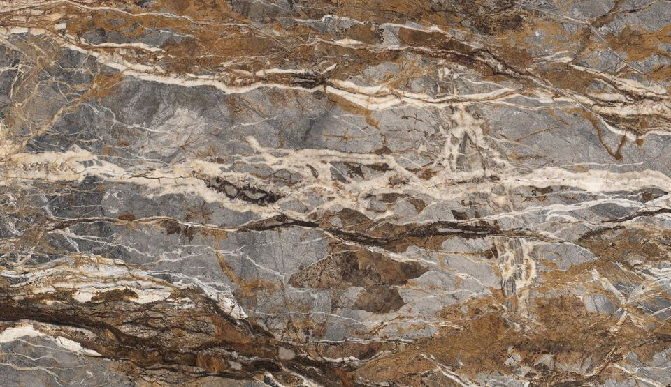
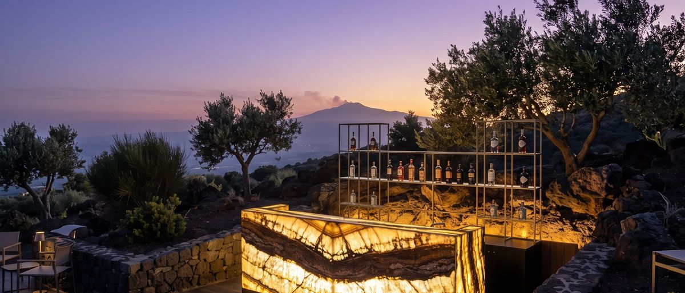
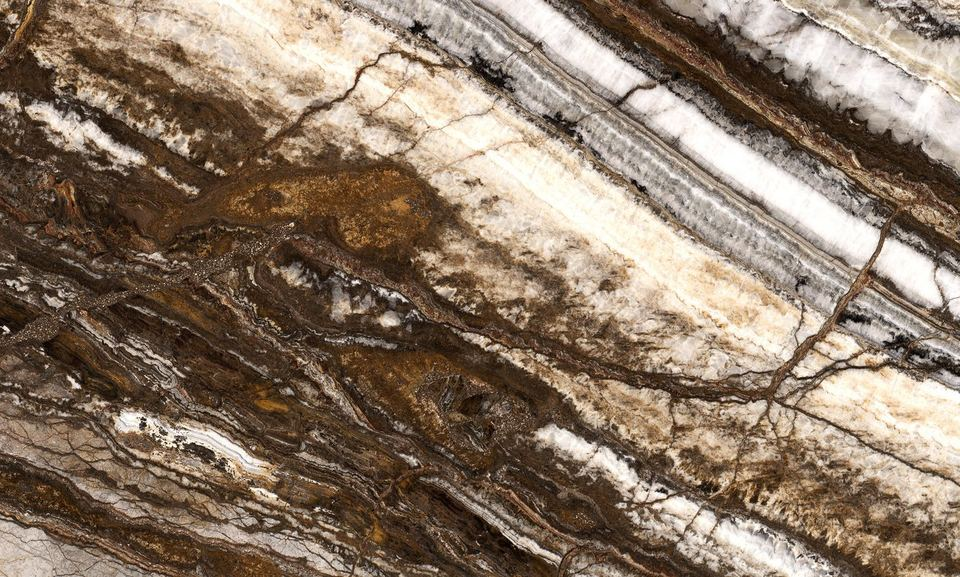
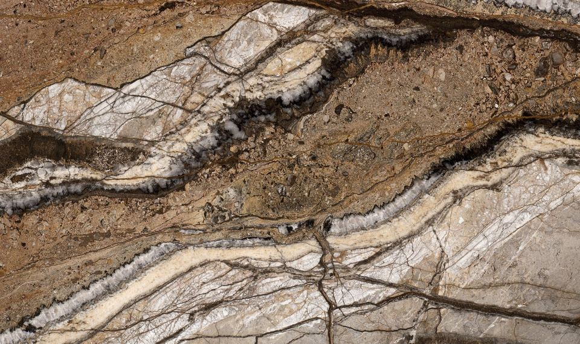
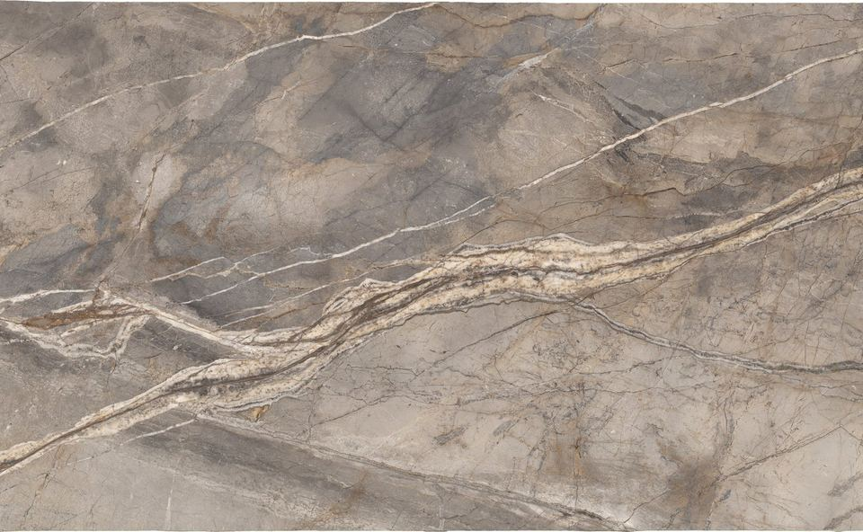
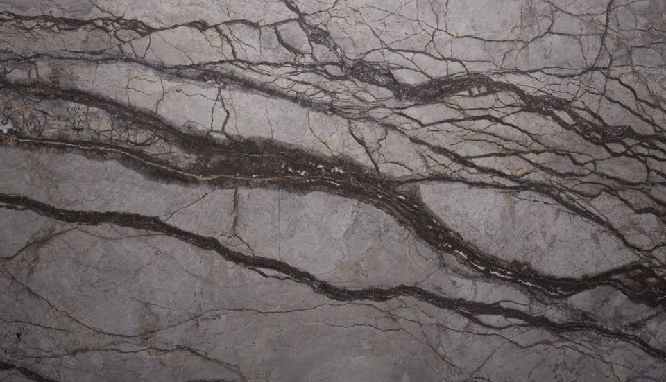
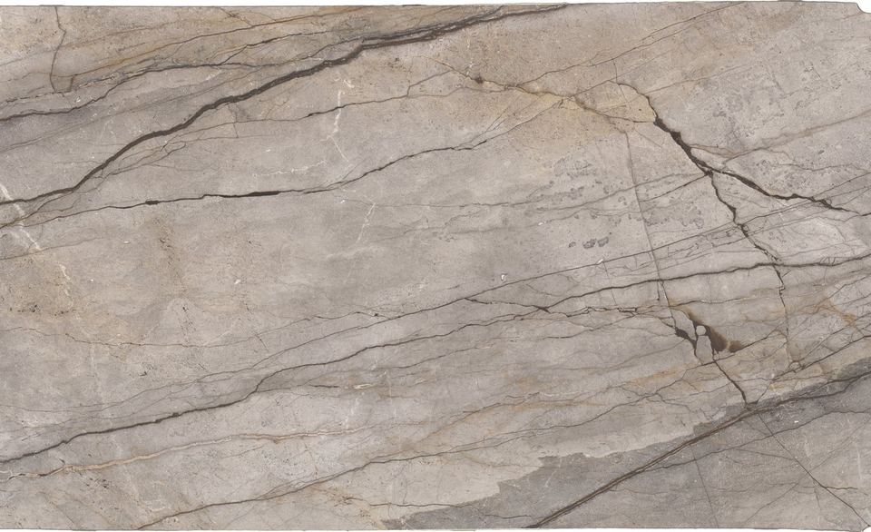
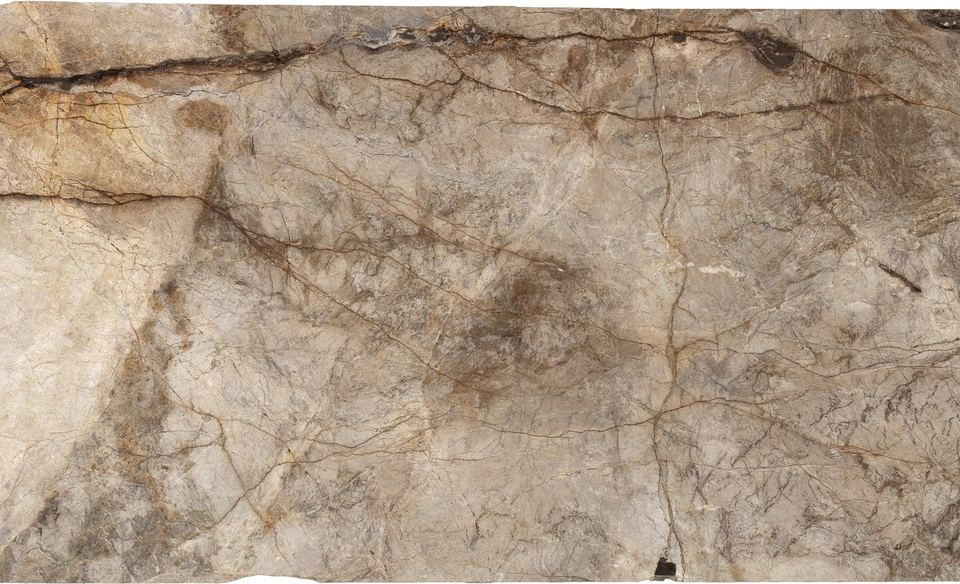
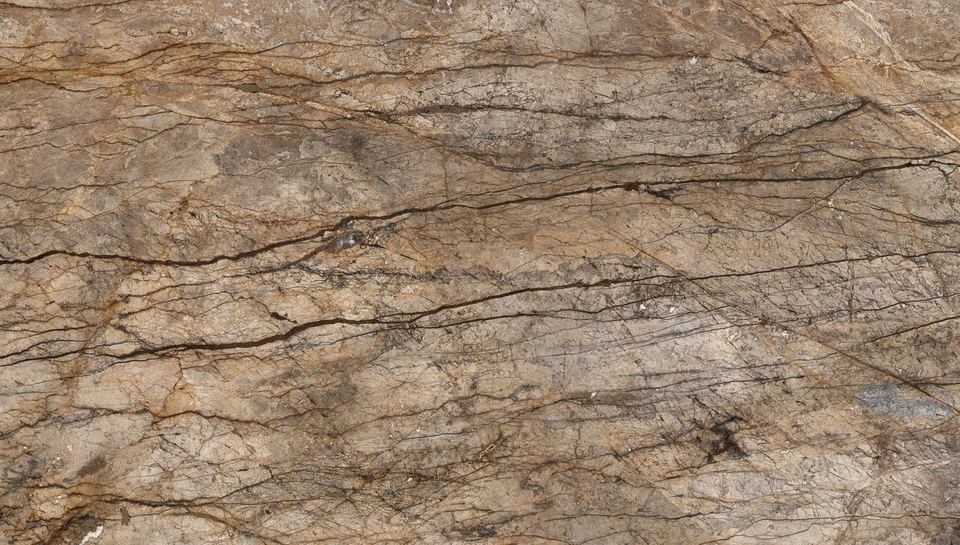
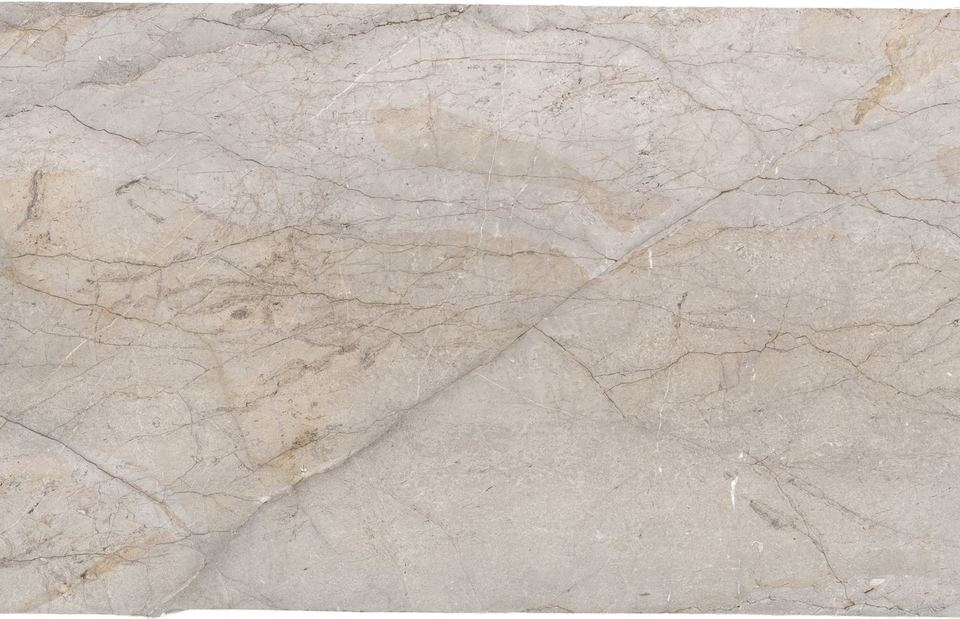

01
Blue Roots
グレーとブルーの地に、金・茶・白の脈が層をなして流れます。空と大地が一枚の面で出会うような表情。
ブルーグレー・ブラウン・ベージュ・ホワイト
この石について相談するMARBLE & NATURAL STONE
採石場から、日本の現場へ。
トルコ・イズミルに自社採石場と一貫工場を持つ石材メーカーと、日本における正規代理店契約を結んでいます。同社の採石場でしか採れない限定石9種と、スラブコレクション43種の大理石・天然石を、設計事務所、ゼネコン・内装会社、石材店の皆さまへご案内しています。スラブ・ブロック・寸法加工品に対応します。

EXCLUSIVE COLLECTION
トルコ産の大理石・天然石だけで構成する限定コレクションです。製造元が自社採石場から切り出す、同社にしかない9石種。推奨厚は20mm／30mm、平均スラブ寸法は3000×1900mm。仕上げは本磨き（Polished）・水磨き（Honed）・レザー（Leather）から選べます。

01
グレーとブルーの地に、金・茶・白の脈が層をなして流れます。空と大地が一枚の面で出会うような表情。
ブルーグレー・ブラウン・ベージュ・ホワイト
この石について相談する
02
白とクリームの結晶層に、ダークブラウンとアンスラサイトの地層が重なります。白い部分は光を透すため、バックライトで層構造が際立ちます。
ブラウン・ベージュ・ホワイト
この石について相談する
03
温かみのあるブラウンの地に、クリームと白の結晶が大きくうねります。強いコントラストと動きがあり、透光性も備えます。
ブラウン・ベージュ・ホワイト・グレー
この石について相談する
04
ブルーグレーと土の暖色が溶け合い、白とベージュの脈が横切ります。寒色と暖色の均衡が、モダンにもクラシックにもなじみます。
ブラウン・グレー・ベージュ
この石について相談する
05
ライトグレーとベージュの地に、ダークブラウンの主脈と細かな枝脈が走ります。脈をたどると黄金の都へ、という名の由来を持つ石です。
ブラウン・グレー
この石について相談する
06
明るいグレーの地に、濃いグレー・茶・ベージュの長い脈と細い副脈が交わります。静かな面に力強い線が走る、対比の石。
ブラウン・グレー・ベージュ
この石について相談する
07
ベージュ・グレー・ブラウンの地に、細く方向性のある脈が整います。大面積でも落ち着いた連続感が得られます。
ブラウン・ベージュ・ホワイト・グレー
この石について相談する
08
ベージュとクリームの地に、グレー・ゴールドブラウン・ダークブラウンの脈が交錯します。層が割れて重なるような、動きの大きい表情。
ブラウン・グレー・ブラック・ゴールド・ベージュ
この石について相談する
09
ライトグレーとクリームの地に、細く穏やかな脈が流れます。主張しすぎない、静かな上質さを求める空間に。
ブラウン・グレー・ベージュ
この石について相談するSPECIFICATION
気になる石はありましたか。石種と用途をお知らせいただければ、スラブ写真とサンプルをご用意します。
SLAB COLLECTION
製造元が取り扱う大理石・トラバーチン・オニキス・ブレッチャなどの石種です。自社採石場の石のほか、製造元がトルコ国内外から調達している石種を含みます。産地・在庫状況・寸法は石種と時期によって異なるため、ご希望の石種と数量をお知らせください。
写真は製造元のスラブ写真です。天然石のため、実際の色味・柄は1枚ごとに異なります。産地は石種ごとにご案内します。
ご希望の石種と数量をお知らせください。在庫・寸法・産地を確認してご案内します。
APPLICATIONS
CGイメージ（製造元提供）
鏡面に近い光沢に仕上げます。色と脈がもっとも深く出ます。壁面、カウンタートップ、造作家具に。
光沢を抑えたマットな仕上げです。反射が少なく、床や広い壁面で落ち着いた表情になります。
表面にわずかな凹凸を残した仕上げです。手触りが柔らかく、光を抑えた落ち着いた質感になります。
BUSINESS MODEL
採石場と工場を自社で持つ製造元と直接取引し、日本における正規代理店として販売しています。石種の選定から見積り、輸入、国内の納品先への手配までを弊社が一貫して行います。
FEATURES
EXCLUSIVE
9種
製造元の自社採石場でしか採れない限定石
SLAB COLLECTION
43種
大理石・トラバーチン・オニキスほか（産地は石種ごと）
EXPORT
20カ国
製造元の輸出実績（売上の95%が輸出）
限定石は、製造元が自社の採石場（埋蔵量1億m³超）で切り出したブロックを、イズミルの一貫工場で切断・研磨・寸法加工・梱包まで仕上げます。原石の選定から出荷まで、品質を一つの会社が管理しています。
Blue Roots、Terra Mater、Silver Roots など、製造元の採石場に固有の9種を、日本における正規代理店としてご案内します。いずれも脈に方向性があり、ブックマッチ・ベインマッチに向いています。
スラブ（原板）、ブロック、図面に基づく寸法加工品に対応します。サンプルピースの手配と、出荷前のスラブ写真による確認ができます。輸入手続きと国内納品の手配は弊社が行います。
CUSTOMERS
物件ごとの石種選定と、サンプル・スラブ写真のご提供に対応します。限定石は他にはない表情を求める空間に。割付やブックマッチのご相談も承ります。
図面に基づく寸法加工品を工場で仕上げて輸入します。工程表に合わせた発注時期のご提案と、出荷前の写真確認で手戻りを減らします。
スラブ単位、ブロック単位の仕入れに対応します。既存の仕入先に加える新しい産地・石種として、少量からご検討いただけます。
MANUFACTURER
採石場と工場を自社で持つ、トルコ・イズミルの石材メーカー。
数値は製造元の資料に基づきます。社名・所在地・工場の資料は、お問い合わせいただいた方にご案内しています。
FLOW
FAQ
最小ロットはどのくらいですか。
スラブは数枚からご相談いただけます。ブロック（原石）や寸法加工品は、物件の数量に応じてお見積りします。
納期の目安を教えてください。
製造元の在庫状況、加工の有無、トルコからの海上輸送の日程によって決まります。物件の工程表に合わせて逆算し、発注の時期をご提案します。
スラブのままの納品ですか。寸法加工はできますか。
製造元の工場で切断・研磨・寸法加工まで行えます。スラブ（原板）、ブロック、図面に基づく加工品のいずれにも対応します。
ブックマッチ（柄合わせ）はできますか。
対応します。限定石は脈に方向性があり、ブックマッチ・ベインマッチに向いています。必要枚数と割付をお知らせください。
すべてトルコ産ですか。
限定石9種はトルコ・イズミルの製造元の自社採石場で採れる石です。スラブコレクション43種には、製造元がトルコ国内外から調達して取り扱う石種も含まれます。産地は石種ごとにご案内します。
サンプルや実物の確認はできますか。
サンプルピースの手配と、出荷前のスラブ写真による確認に対応します。大規模な物件では、現地（トルコ）での検品もご相談ください。
製造元はどこですか。
トルコ・イズミルに自社採石場と一貫工場を持つ石材メーカーです。社名・工場の資料は、お問い合わせいただいた方にご案内しています。
IMPORTER
お取引・納品の窓口は、株式会社Wisteriaです。